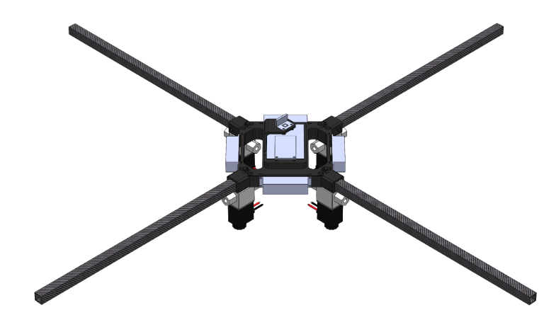
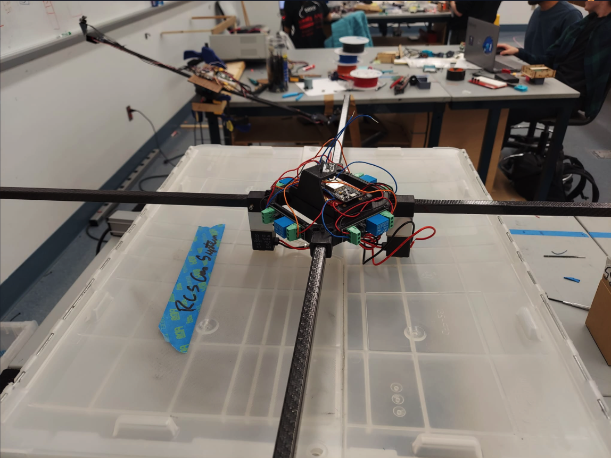
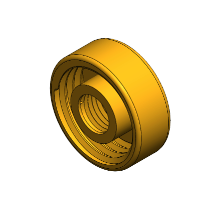

Sprint 2 Overview
In Sprint 2 of our drone development project, we successfully completed the full mechanical assembly of the gas thruster reaction control system, which is essential for stabilizing our drone using compressed air. This sprint involved the integration of various key components that included disconnects, fittings, and tubing. Additionally, we incorporated a compressor and a regulating valve to effectively manage the pressurized air, culminating in a carefully designed propelling nozzle.
3D CAD of drone
Drone
Nozzle Design
Mechanical assembly of the gas thruster reaction control system on the drone
We additionally ran breadboard tests on a 4-relay system to ensure the functionaility before beginning intergration onto the un-changeable prototyping board.
Video of breadboard test
Our final goal is to implement four thrusters on a stationary drone. If the drone is perturbed from its stable position, the Inertial Measurement Unit (IMU) will detect the change, and the microcontroller will command the thrusters to respond accordingly to maintain stability. In preparation for this, our next priorities for Sprint 2 included testing the controller software and starting to electrically integrate the new four-thruster system.
To further validate our firmware design choices before finalizing the electrical integration, we created a simulation that tests various parameters for the control system. This allows us to ensure robustness and reliability in our drone's stability and response mechanisms.
Seesaw simulation
Four-thruster drone simulation showcasing stabilization in action
As we move forward, we are excited to refine our design, enhance functionality, and ensure that our four-thruster drone achieves the stabilization capabilities required for our final demonstration.